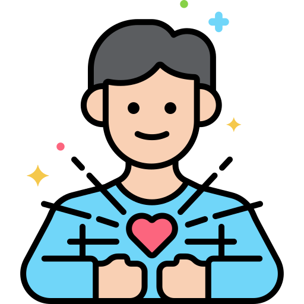
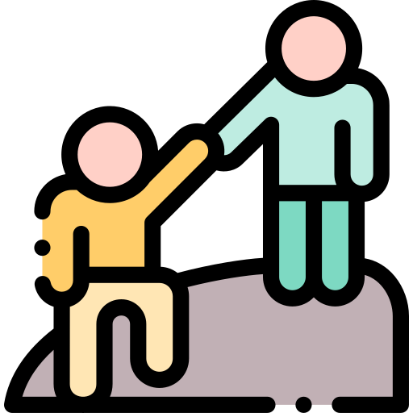
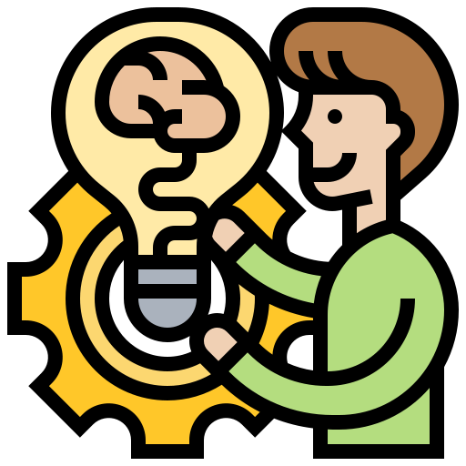
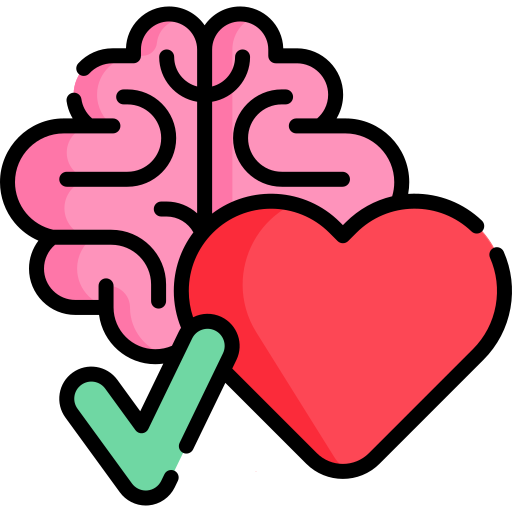

-
1Amplia tus redes sociales
Conoces a nuevas personas que tienen mucho que aportarte y haces nuevos amigos
-
Descubre tus competencias

Seguro que tienes muchas habilidades para las que aún no sabes que eres bueno
2 -
3Aumenta tu realización personal 
Puedes experimentar una manera de ser más feliz, encontrar un espacio para hacer lo que te gusta y mejorar tu autoestima
-
Siéntete útil para la sociedad 
Ayudando a los que más lo necesitan con tu tiempo y tus talentos
4 -
5Agrega valor a tu hoja de vida
Incluye tu voluntariado en tu hoja de vida, es una experiencia que valoran mucho las empresas
-
Invierte tu tiempo libre
Aporta las horas que te quedan en la semana para hacer una labor social. ¡Serás recompensado!
6 -
7Contrasta tus conocimientos 
Una cosa es lo que dicen los libros y otra la realidad: fortalece tus conocimientos y esperiencia
-
Deja Huella
Contribuye con el mundo que dejaremos a futuras generaciones
8 -
9Te mantiene saludable 
Se ha encontrado que luego de 10 semanas de observación médica a jóvenes voluntarios, su salud cardiovascular mejora, tienen niveles más bajos de colesterol y de grasa corporal
-
¡Diviértete!

No todo es trabajo, también puedes encontrar diversión en tu voluntariado
10